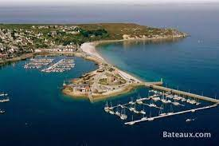

Visite de l'Île de Ré : Une Expérience Inoubliable
Bienvenue dans le récit captivant de ma visite sur l'Île de Ré, une perle de l'Atlantique aux charmes infinis. Entre ses plages dorées, ses villages pittoresques et son histoire fascinante, l'Île de Ré a tout pour séduire les voyageurs en quête d'une escapade mémorable.
Saint-Martin-de-Ré : La Fortification Élégante
Dès mon arrivée, Saint-Martin-de-Ré m'a accueilli avec ses ruelles pavées, ses cafés animés, et surtout, son impressionnante fortification. Construite par Vauban au XVIIe siècle, cette citadelle maritime offre une vue spectaculaire sur l'océan. Les remparts chargés d'histoire sont une étape incontournable.

Ars-en-Ré : Charme Authentique
Ars-en-Ré m'a charmé avec ses maisons blanches aux volets verts, ses ruelles fleuries, et son célèbre clocher noir et blanc. En flânant dans ce village classé parmi les "Plus Beaux Villages de France", j'ai découvert un calme apaisant.

Les Plages Infinites : Sable Fin et Vagues Douces
Les plages de l'Île de Ré sont un paradis pour les amoureux de la mer. Le sable fin, les dunes sauvages et les vagues douces créent un paysage idyllique. C'est l'endroit parfait pour se détendre et profiter du doux murmure de l'océan.

Vauban et ses Fortifications Maritimes
Les œuvres de Vauban ponctuent l'île, rappelant l'importance stratégique de cette région. Les fortifications de Saint-Martin-de-Ré, classées au patrimoine mondial de l'UNESCO, sont l'œuvre emblématique de l'ingénieur militaire.

Cuisine Authentique : Entre Terre et Mer
Les produits de la mer et du terroir rétais ont égayé mes papilles. Entre les huîtres savoureuses, le sel de l'île, et les pommes de terre délicieuses, la cuisine locale est un festival de saveurs.
Conclusion
Mon séjour sur l'Île de Ré a été une aventure enchanteresse. Entre la richesse de son patrimoine, la beauté de ses paysages et la délicatesse de sa cuisine, cette île m'a offert bien plus que des souvenirs, mais une expérience à chérir pour toujours. Que vous soyez passionné d'histoire, amoureux de la nature, ou simplement en quête de détente, l'Île de Ré répondra à toutes vos attentes. Embarquez pour cette escapade rétaise et laissez-vous envoûter par la magie de l'Atlantique.
Haut de page
Arras : Une Ville Immortelle au Cœur du Temps

Grand-Place d'Arras : Un Livre Ouvert sur l'Histoire
La Grand-Place, joyau du patrimoine arrageois, se présente comme un livre ouvert, chaque façade étant une page qui narre les chapitres glorieux du commerce prospère et des événements marquants qui ont forgé le destin d'Arras.

Les Boves d'Arras : Un Labyrinthe de Mystères Souterrains
Les mystérieuses Boves, réseau de galeries souterraines, dévoilent un labyrinthe qui renferme les secrets bien gardés d'Arras. Ces anciennes carrières, devenues refuges et entrepôts, invitent à un voyage captivant dans les entrailles de la cité.

Citadelle Vauban : Sentinelle Impériale au Cœur d'Arras
Érigée selon les plans ingénieux de Vauban, la Citadelle d'Arras se dresse fièrement comme une sentinelle impériale, rappelant l'art militaire et l'architecture stratégique de l'époque. Ses remparts imposants et ses douves racontent des siècles de résilience.
Beffroi d'Arras : Témoin Éternel de l'Évolution Urbaine
Le Beffroi, érigé comme un témoin éternel, domine le panorama d'Arras. Du sommet de cette tour emblématique, observez l'évolution urbaine, contemplez les toits de la ville et laissez-vous emporter par le souffle de l'histoire.
Conclusion : Arras, un Patrimoine Vivant et Éternel
En conclusion, Arras se dévoile comme une ville dont chaque pierre raconte une histoire, où l'héritage du passé se mêle harmonieusement à la vie moderne. À travers ses places emblématiques, ses souterrains mystérieux, et sa citadelle majestueuse, Arras offre une expérience unique, un voyage à travers le temps et une immersion dans un patrimoine vivant.
Haut de page
Camaret-sur-Mer : Une Perle Bretonne

Situé sur la pointe ouest de la Bretagne, Camaret-sur-Mer émerveille les visiteurs par sa beauté naturelle et son riche patrimoine maritime. Cette perle bretonne, nichée entre terre et mer, offre une expérience unique aux amoureux de la nature et aux passionnés d'histoire.
Le Port de Camaret : Escale Pittoresque
Le port de Camaret, abrité par ses digues de pierre, accueille les bateaux de pêche et de plaisance. Flânez le long des quais, imprégnez-vous de l'atmosphère maritime et découvrez les charmantes maisons de pêcheurs qui bordent les ruelles pittoresques.

La Tour Vauban : Gardienne des Côtes Bretonnes
Érigée au 17e siècle selon les plans de l'ingénieux Vauban, la Tour Vauban veille sur les côtes bretonnes. Classée au patrimoine mondial de l'UNESCO, elle offre un panorama exceptionnel sur l'océan. Un témoignage de l'ingéniosité architecturale de Vauban.
La Chapelle Notre-Dame-de-Rocamadour : Havre de Sérénité
Perchée sur les falaises, la chapelle Notre-Dame-de-Rocamadour offre un havre de paix. Son architecture sobre et sa vue imprenable en font un lieu propice à la contemplation. Un endroit chargé de spiritualité au cœur de la nature sauvage.

La Gastronomie Camarétoise : Saveurs Marines
Camaret-sur-Mer séduit également les papilles avec sa gastronomie marine. Dégustez des fruits de mer frais dans les restaurants du port, et laissez-vous envoûter par les saveurs authentiques de la cuisine bretonne. Un festin pour les amateurs de produits de la mer.
Conclusion : Camaret-sur-Mer, Entre Tradition et Nature
En conclusion, Camaret-sur-Mer se révèle comme un joyau breton qui marie harmonieusement tradition et nature. Des côtes sauvages aux vestiges historiques, chaque coin de cette petite ville dévoile une part de son histoire et de son charme intemporel, faisant de chaque visite une expérience inoubliable.
Haut de page
Page précédente